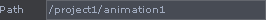

Animation Editor
Description[edit]
The Animation Editor allows you to create and edit keyframed animation stored in Animation COMPs.
To open the Animation Editor, right-click on an Animation COMP and select Edit Animation... to open that animation in the editor. You can also change any pane to Animation Editor type and the Editor will open whilst pointing to the last Animation COMP that was scoped.
The editor will display the channels found inside the Animation COMP that is scoped (the scoped Animationm COMP is shown in the Path field). Change this path to edit a different Animation COMP by right-clicking on that COMP and selecting Edit Animation....
Click the Add Channel button to create a channel and start animating. Refer to the Working With Channels and the Working With Keys sections below for tips on interacting with channels and keys. The editor lets you create and delete channels, as well as add, edit, or delete keyframes.
Interface[edit]
Setup for Keyframe Animation[edit]
Keyframe animation is created and edited in the Animation Editor. The channels and keyframes created are stored in Animation COMPs. Parameters can be animated directly from the parameter using these animation tools. The sections below describe how to work with these tools.
To begin creating keyframe animation you first need an Animation Component. Animation Components are where keyframed channel data is stored. Multiple Animation COMPs can be created throughout your project, and Animation COMPs can also be saved out and used in other projects.
The Animation Editor lets you create and keyframe channels for one Animation COMP at a time. To edit an Animation COMP in the editor, right-click on component you want to load into the editor and select Edit Animation...
This will open the editor with the selected Animation COMP scoped, which is confirmed in the Path field. 
Working with Channels[edit]
Adding Channels[edit]
When adding a channels, they are created and stored in the Animation COMP referenced in the Path field. To create a channel, add the channel name to the Names field, then click Add Channels. The channel will be created and added to the channel list. Multiple channels can be created at once by specifying multiple channel names in the Names field (explicitly or by using pattern matching) and then clicking Add Channels.
Viewing Channels[edit]
The channel list on the left side of the editor displays all the channels of the scoped Animation COMP. Only the channels that are selected in the list will be displayed in the viewer to the right. Click any channel to select it. Use <Shift>+click to select multiple neighboring channels. Use <Ctrl>+click to add or remove any channel from the selected set.
Templating Channels[edit]
A channel can be put in a template mode in the channel editor, making it visible but not editable. To template a channel, turn on the pink template flag to the right of the channel's name. Template channels are displayed as dotted lines in the editor.
The image below shows a channel with its template flag turned on.
Deleting Channels[edit]
To delete a channel, click the "X" button to the right of the channel in the channel list.
Channel Settings[edit]
The channel settings allow you to set the Extend Conditions for channels. Extend conditions define the channel's value outside its start/end range. Select the channel(s) to change its settings, then use the Extend Left and Extend Right menus to set that channel(s) extend conditions. The Default Value field is used when a channel's extend condtion is set to Default Value.
Working with Keys[edit]
All channels are created with a start and end keyframe which defines the channel's length.
To add a keyframe to a channel, use Alt+LMB. This will add a single keyframe to the channel under the cursor.
To add a keyframe to multiple channels and a specific time, first select all the channel you wish to add keyframes to (box select the segments you want), then use Alt+MMB.
To add a keyframe to all channels at a specific time, use Alt+RMB.
To delete keyframes, select the keyframes then press the Delete button.
Selecting Keys[edit]
When holding down shift, all keys & segments between the clicked on key and the previous & next selected keys or segments will be selected (i.e. range select).
Holding Ctrl and clicking on keys allows you to add/remove the key to the selection.
ALT+MMB now lets you key selected channel segments and ALT+RMB lets you key all channels.
Moving and Editing Keys[edit]
To move a key, drag it with the LMB. Multiple keys can be moved by selecting them and then dragging them using LMB.
To constrain the movement to value or time only (ie. one axis), hold Shift and drag with the LMB .
Tangents can be manipulated by using the LMB on the tangent handles. To break tangent continuity (tie and untie tangents), select the tangent then press the <t> key.
See Also[edit]
See also Keyframe CHOP